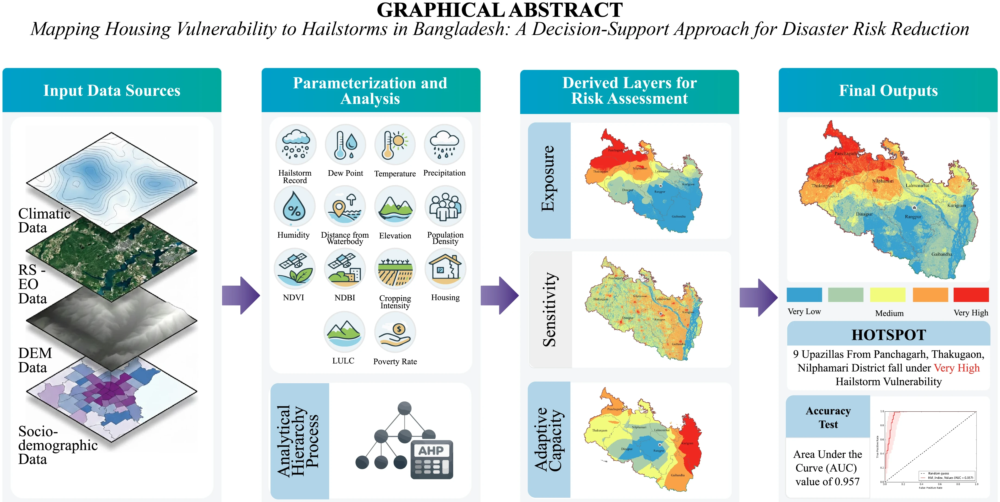
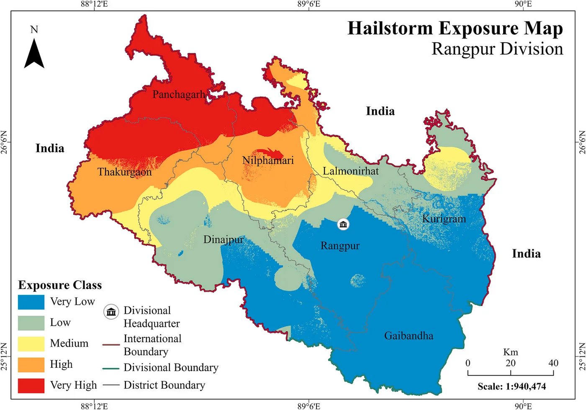
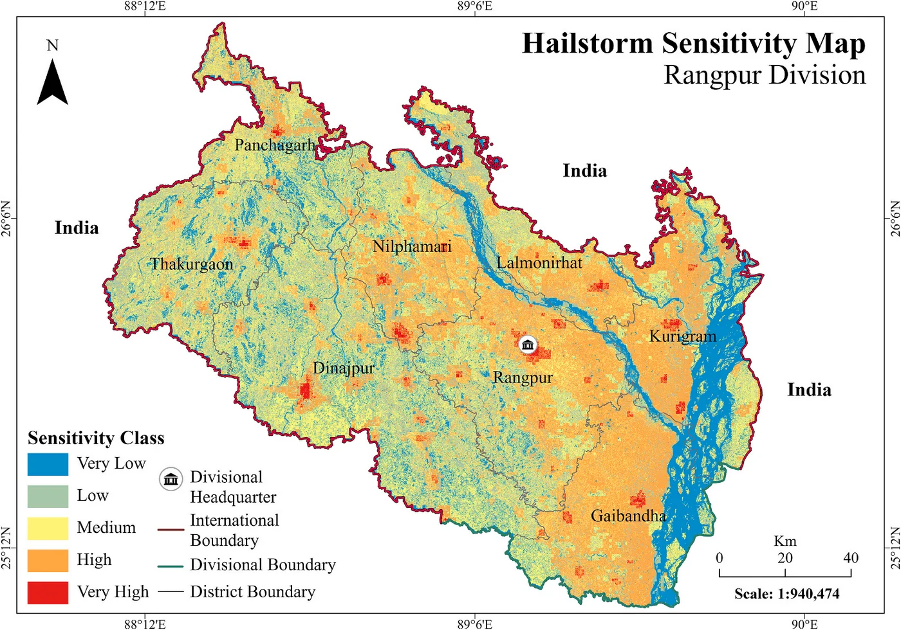
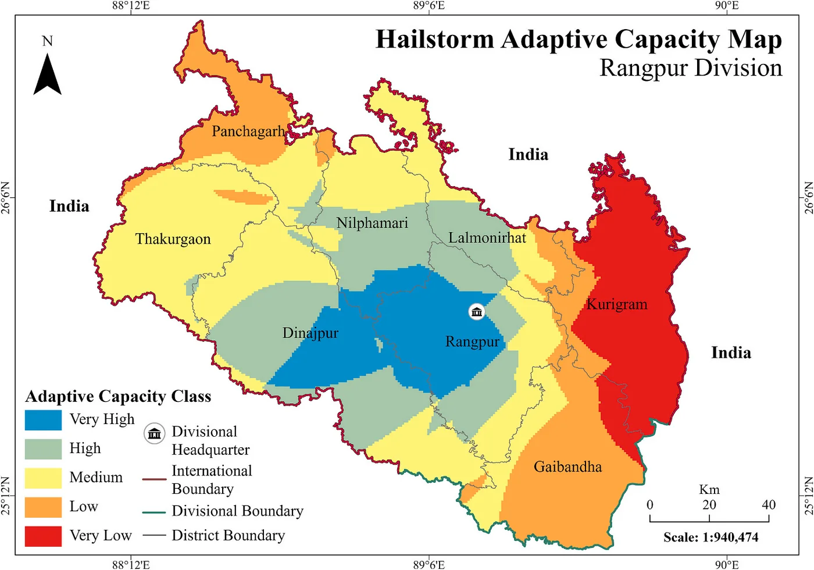
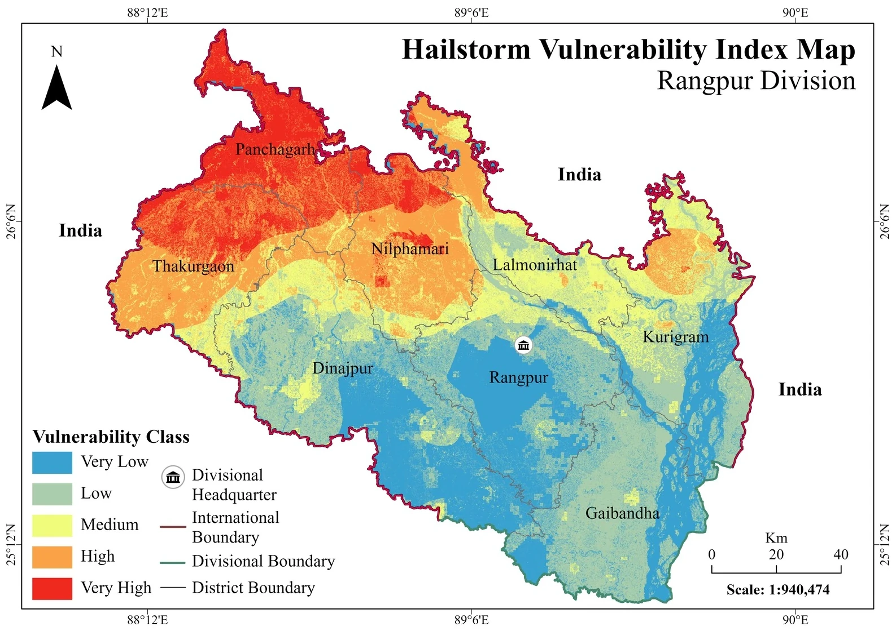
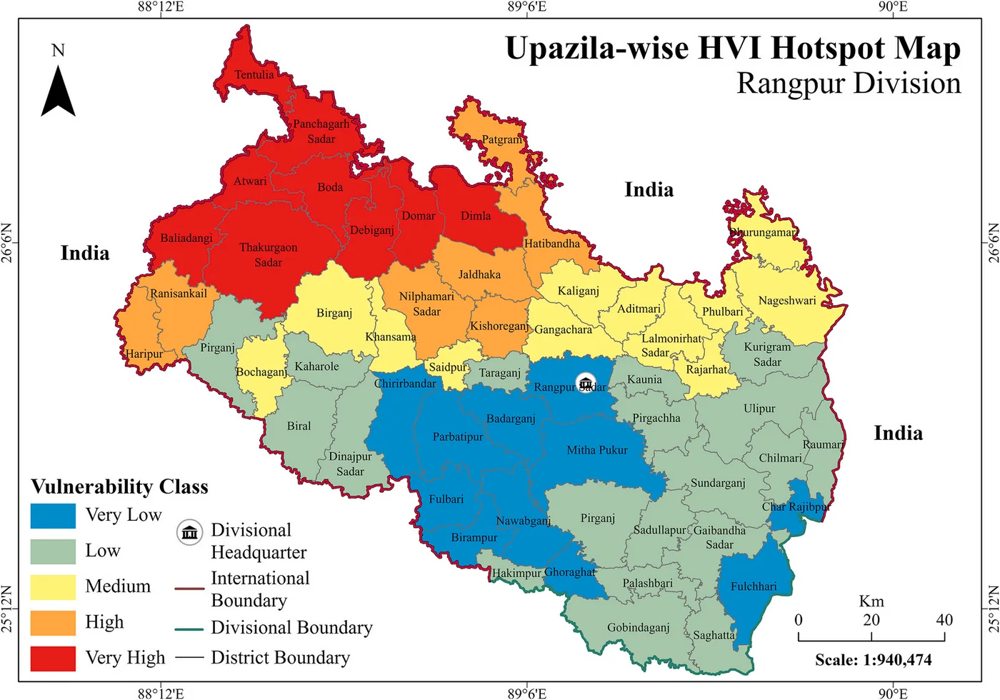
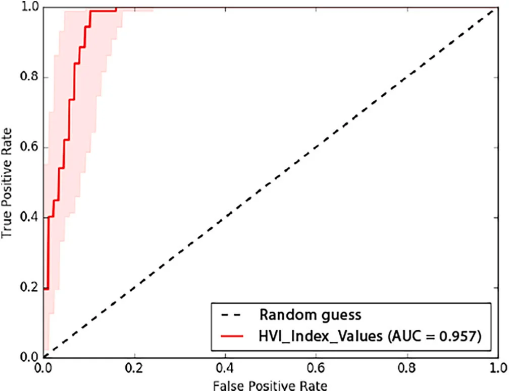

Floods and cyclones dominate Bangladesh's disaster planning; hailstorms, which tear through thatch and tin roofs every pre-monsoon season, barely register. This study builds the first upazila-level Hailstorm Vulnerability Index for Rangpur Division and names, upazila by upazila, where climate-resilient housing investment should go first.
Hailstorms are a recurrent yet chronically underexamined climate hazard in South Asia. In Bangladesh's Rangpur Division, high hailstorm frequency, near-universal sub-standard housing, and entrenched poverty converge, and a single Nor'wester can strip roofs, flatten crops, and push already-poor households deeper into debt. Yet national disaster-risk frameworks, built around floods and cyclones, had never mapped this risk at a resolution anyone could act on.
Policy commitments exist (the Sendai Framework, the National Plan for Disaster Management, the Bangladesh Climate Change Strategy and Action Plan), but there was no sub-district tool to translate them into targeted action in the hail belt. This paper closes that gap.

Fifteen indicators from meteorological records, satellite imagery, and the 2022 Population and Housing Census were standardised to a common 0–1 scale and weighted with the Analytical Hierarchy Process, with every pairwise matrix passing the consistency threshold (CR ≤ 0.10). The three IPCC-aligned components are combined multiplicatively, so exposure and sensitivity amplify each other while adaptive capacity buffers the result.



District-level mean scores (0–5 scale) across the three HVI sub-indices. Panchagarh and Thakurgaon lead on Exposure (4.92 and 4.43 against a divisional mean of 2.89); Sensitivity is comparatively uniform across all eight districts (2.6–3.1); Kurigram's Adaptive Capacity score of 4.84 is the clearest outlier, consistent with the paper's inverse exposure–adaptive-capacity relationship. Dashed line marks the divisional mean per axis.


The index turns into a ranked intervention list, the part of the paper built to be used rather than cited.
In the highest-priority upazilas (Tentulia, Panchagarh Sadar, Jaldhaka, and Kishoreganj), the recommendation is to replace sub-standard dwellings with structures that can withstand hail impact, wind, and rain loading. The south-central belt of Very Low risk, around Rangpur Sadar, Mithapukur, and Hakimpur, could serve as a staging corridor for disaster-response logistics.
This is the first sub-district evidence base for hailstorm housing risk in Bangladesh, giving the Bangladesh Climate Change Strategy and Action Plan a data-driven way to allocate resilient-housing funds, in line with the Sendai Framework's call for risk-informed investment. The AHP-GIS framework is transferable to other data-scarce regions where hailstorm risk remains unassessed.

Housing and poverty data are thinnest in exactly the rural upazilas flagged as highest risk, AHP weights carry the subjectivity of expert judgement, and historical records cannot show how risk will shift under a changing climate. The next steps are a multi-hazard version covering floods, cyclones, and drought; dynamically downscaled climate projections; and gender-disaggregated, household-level data for the most vulnerable upazilas.
Hasan, M. M., Jaman, F., & Nayem, J. (2026). Mapping housing vulnerability to hailstorms in Bangladesh: A decision-support approach for disaster risk reduction. Progress in Disaster Science, 31, 100643. https://doi.org/10.1016/j.pdisas.2026.100643